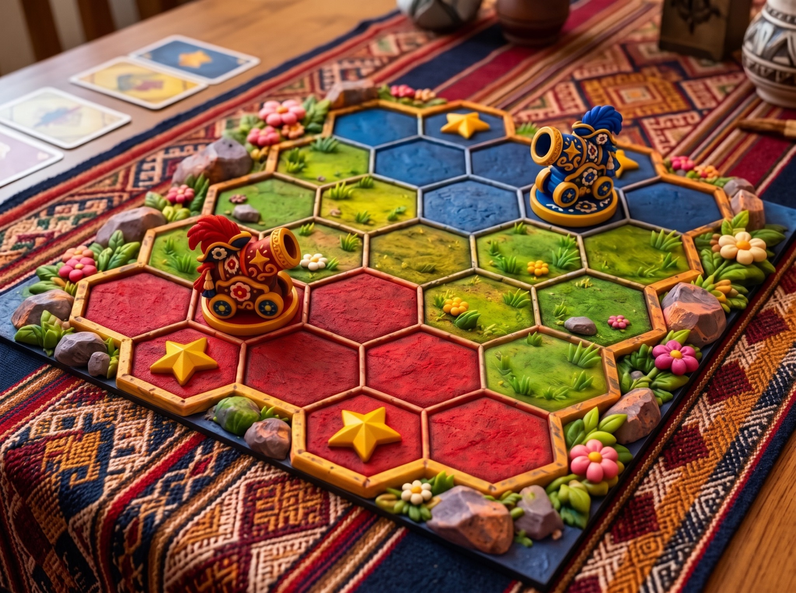

Arte comercial · producto en desarrolloEN TU MESA · EN DESARROLLODesconecta de las pantallas.
Desconecta de las pantallas.
Conecta con los tuyos.
Un duelo de estrategia para tardes en familia, reuniones con amigos y nuevos desafíos. Elige entre dos conceptos de edición física.
Ver las ediciones